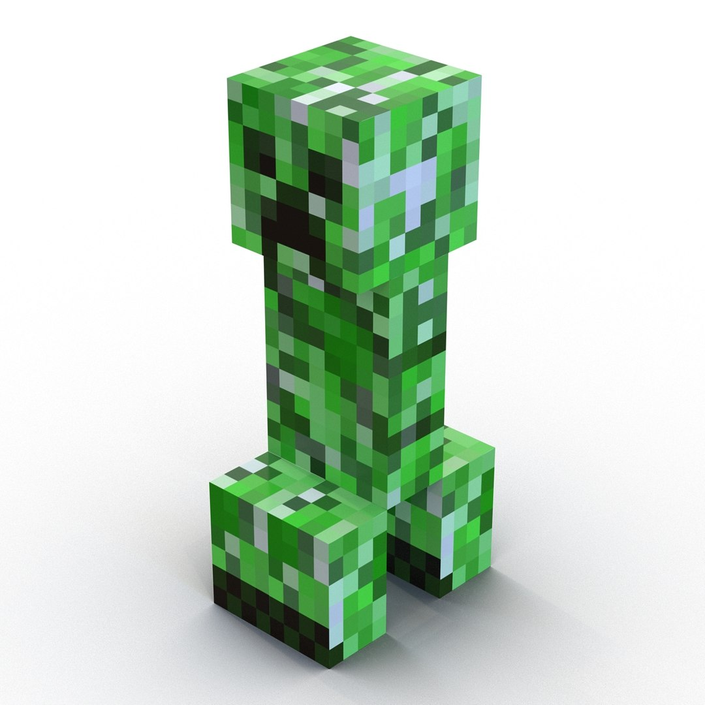
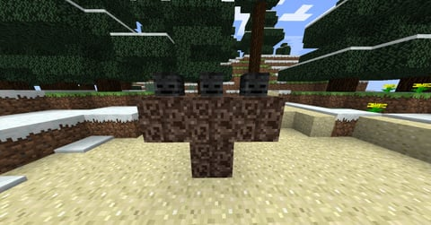
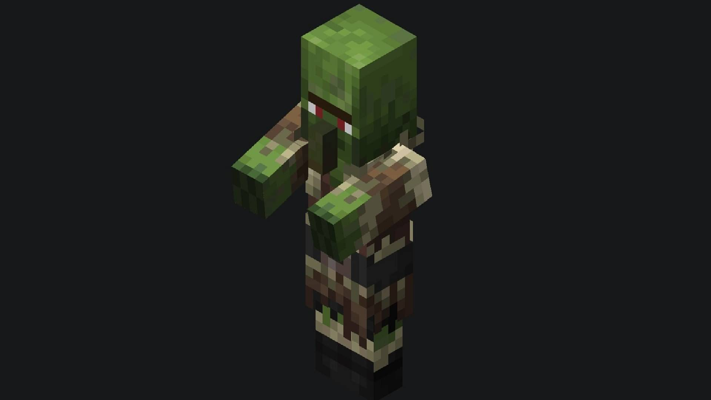

Acceuil
Les monstres et leurs faiblaisses
Points de vie, experience (ou récompences) gagnées selon le personnage:
- 8 coeurs Araignée: 5,(Ficelle 0-2, oeil d'araignée)
- 10 coeurs Blaze:10,(Baton de blaze 0-1)
- 10 coeurs Creeper:5,(Poudre à canon 0-2,disque de musique,tete de creeper)
- Cube de magma: 8 coeurs Gros:4, 7 coeurs Moyen:2, 0,5 coeurs Petit:1,(Cube de magma)
- 4 coeurs Endermite:5,(rien)
- 100 coeurs Enderdragon:12 000, 500 si invoqué à nouveau,(Oeuf de dragon)
- 20 coeurs Enderman:5,(Perle de l'ender0-1)
- 12 coeurs Évocateur:5,(Totem d'immortalité 1, émeuraude 0-1)
- 15 coeurs Gardien:10,(Morue crue 0-1,cristaux de prismarine 0-1, éclat de prismarine 0-2, poisson tropical
0-1,
poisson globe 0-1, saumon cru 0-1)
- 5 coeurs Ghast:5,(Poudre à canon 0-2, larme de ghast 0-1 )
- 40 coeurs Grand gardien:5,(Morue crue 0-1,cristaux de prismarine 0-1, éclat de prismarine 0-2, poisson
tropical 0-1,
poisson globe 0-1, saumon cru 0-1, éponge mouillée)
- 20 coeurs Hoglin:5, 1 à 7 si reproduit,(Cotelette de porc crue 2-4, cuir 0-2)
- 10 coeurs + 2 points d'armure Noyé:5,(Chair putréfiée 0-2, lingot de cuivre)
- 10 coeurs Phantom:5,(Membrane de phantom 0-1)
- 8 coeurs Piglin:5+1 à 3 par pièce d'armure,(Équipement)
- 25 coeurs Piglin barbare:20,(Hache en or)
- 12 coeurs Pillard:5,(Arbalète 0-1, bannière d'illageois)
- 4 coeurs Poisson d'argent:5,(Rien)
- 50 coeurs Ravageur:20,(Selle 0-1)
- 15 coeurs, 20 quand sa carapace est fermée Shulker:5,(Carapace de shulker 0-1)
- Slime: 8 coeurs Gros:4, 2 coeurs Moyen:2, 0,5 Petit:1,(Boule de slime 0-2)
- 13 coeurs Sorcière:5,(Sucre, poudre de redstone, poudre lumineuse, poudre à canon, yeux d'araignée, fioles
vides,
baton)
- 10 coeurs Squelette:5,(Flèche 0-2, os 0-2, arc 0-1)
- 10 coeurs Vagabond:5,(Flèche 0-2, flèche avec enchantement de lenteur 0-2, os 0-2, arc 0-1)
- 7 coeurs Vex:3,(Épée en fer 0-1)
- 12 coeurs Vindicateur:5,(Émeuraude 0-1, hache en fer)
- 250 coeurs Warden:5,(Catalyseur de sculk)
Technique pour battre le Warden: Qui te dit que ça doit être toi qui dois le combattre? Rien ne le dit! Tu peux
donc utiliser les autres mobs contre le Warden! (À condition de se tenir à distance, bien sûr) La méthode la
plus éfficace consiste à faire spawn le Wither pour qu'ils se combattent! Bien sûr, le Warden achèvera le
Wither, cependant, l'effet Wither viendra à bout du Warden.
- 150 coeurs, 4 points d'armure Wither:50,(Étoile du nether)
- 10 coeurs Wither squelette:5,(Charbon 0-1, épée en pierre, crane de wither squelette)
- 10 coeurs, 2 points d'armure Zombie:5+1 par équipement porté(adulte),12,(bébé),(Chair putréfiée 0-2, lingot
de fer, carotte, pomme de
terre, tete)
- 10 coeurs, 2 points d'armure Zombie momifié:5+1 par équipement porté(adulte),12,(bébé),(Chair putréfiée
0-2, lingot de fer, carotte,
pomme de terre, tete)
- 10 coeurs, 2 points d'armure Zombie villageois:5+1 par équipement porté(adulte),12,(bébé),(Chair putréfiée
0-2, lingot de fer, carotte,
pomme de terre, tête)

